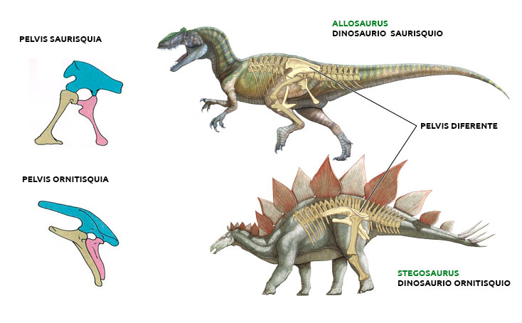
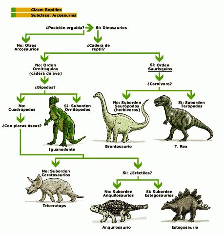
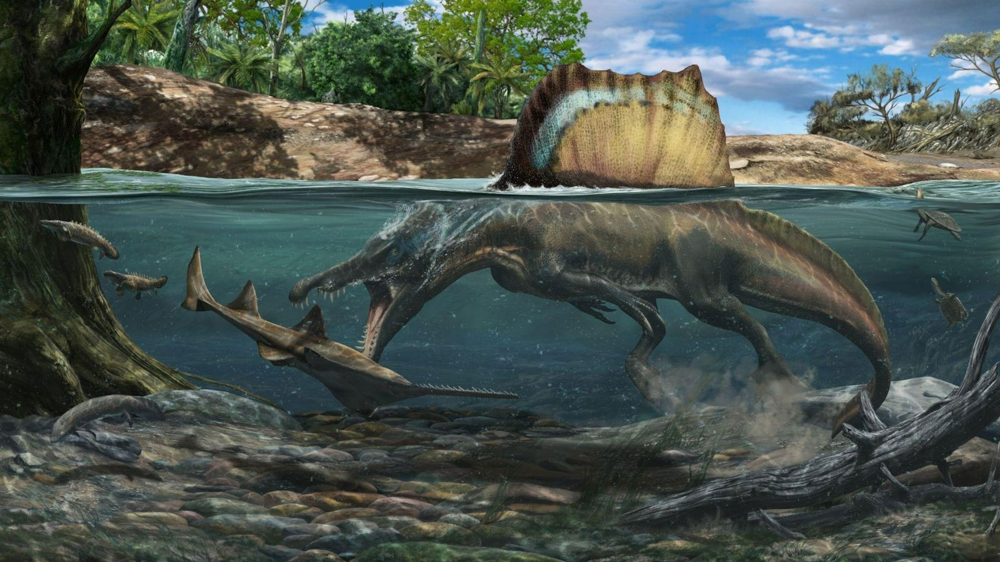

¿De qué manera se clasifican los dinosaurios?
Los dinosaurios se dividen en dos grandes grupos: los saurisquios ("con cadera de reptil") y los ornitisquios ("con cadera de ave"). Lo que llamamos cadera, o pelvis, se compone de tres huesos: pubis, ilion e isquion. Todos los dinosaurios poseían los tres mismos huesos pero en dos posiciones diferentes. El pubis tenía músculos que lo unían a las costillas: esto ayudaba a respirar y daba soporte. El pubis apuntaba hacia adelante y hacia abajo en los saurisquios y hacia atrás en los ornitisquios herbívoros. El isquion tenía músculos que movían las patas y la cola. En los ornitisquios, el pubis servía más de ayuda para respirar que de soporte de las tripas.

Por ejemplo el Alosaurio era un saurisquio. Observa el hueco en medio de la pelvis. Aquí es donde se insertaba el fémur tanto de saurisquios como de ornitisquios. El "balancín" del final del pubis estaba diseñado para absorber el peso de este terópodo predador cuando se inclinaba hasta el suelo para descansar.
Por otro lado, los ornitisquios, como el estegosaurio, tenían la pelvis más ancha y el pubis estaba orientado hacia atrás. El pubis era más pequeño que en los saurisquios. Los ornitisquios no eran tan rápidos como los saurisquios: era una cuestión de velocidad frente a la agilidad de estos herbívoros.
Grupos de dinosurios
Todos los dinosaurios eran arcosaurios ("reptiles dominantes"). Pertenecían a dos grupos: saurisquios, los reptiles dominantes en el triásico y jurásico, y ornitisquios, los reptiles dominantes en el cretácico. Los saurisquios se subdividen en terópodos y saurópodos. Los terópodos eran carnívoros -como el Tyrannosaurus rex y el Deinonychus- y con el tiempo también aves. Los saurópodos eran herbívoros de cuello largo como el Diplodocus. El segundo gran grupo, los ornitisquios, eran todos herbívoros; se subdividen en tireóforos con armadura ósea y cerápodos. Los cerápodos incluyen a los dinosaurios bípedos de cabeza gruesa y los dinosaurios con cuernos, como el Triceratops.

Clasificación por dieta: Herbívoros y Carnívoros

Empecemos por los herbívoros, consumían una gran variedad de plantas. Sus grandes cuerpos estaban adaptados anatómica y fisiológicamente para este tipo de alimentación, la cual consistía en hojas o brotes frescos ubicados en las partes altas de los árboles. También consumían frutos, hojas aciculares como de las coníferas, ginkgos y vegetación de pradera
Se cree que digerían piedras para que funcionen como dientes en los estómagos y hay evidencia científica que los animales actuales, lo siguen haciendo. Se han encontrado gastrolitos asociados a fósiles de ictiosauros y de dinosaurios saurisquios.
Hoy en día, los cocodrilos, algunos reptiles, insectos, peces y aves como los avestruces y las gallinas continúan utilizando gastrolitos. En el caso de los pájaros, llenan sus mollejas con arena y pequeñas piedras para digerir. Con el tiempo, los objetos filosos se incrustan el musculoso órgano, actuando como dientes.
La alimentación de los dinosaurios carnívoros podía consistir en mamíferos, peces, insectos e incluso otros dinosaurios. Algunos se alimentaban de carroña, otros eran cazadores activos de presas vivas y ciertas especies tenían una dieta específica que estaba basada en animales acuáticos.
Y aunque nos gusten las películas de dinosaurios donde se nos muestren dinosaurios con sed insaciable de matar, no hay que dejarse engañar, no todos los dinosaurios tenían un hambre de caza tal como se muestra, algunos cazaban si podían y si no, comían carroña.
Clasificación según su habitat
Los dinosaurios tuvieron que adaptarse a días de sol abrasador y noches de gélida oscuridad. Tenian climas extremos, pero... ¿Por qué?
Una razón es que cuando aparecieron los primeros dinosaurios, todos los continentes estaban unidos. Eso significa que había vastas regiones interiores adonde no llegaban los vientos del océano, cargados de lluvia, y por eso el clima era más seco. Pero cuando los continentes empezaron a separarse, el clima cambió progresivamente.

Los cientificos y paleontologos clasificaron a los dinosaurios por su habitat varias veces e incluso es información importante para la reconstrucción artistica del mismo. La manera en que ellos se dan cuenta de en que bioma vivían, es por las huellas fosilizadas y restos de otros seres vivos.
Por ejemplo muchos dinosaurios vivían en pantanos, ríos y otras tierras húmedas. Los sabemos porque junto a los huesos se han conservado los fósiles de peces y plantas de dichas zonas.
Un ejemplo puede ser el icónico Espinosaurio, que se sabe que se alimentaba de animales acuáticos y pasaba mayormente el tiempo en el agua y no en la tierra como se puede ver en Jurassic Park 3.
| Carnívoro |
Terópodo |
Alosaurio |
 |
| Carchadontosaurio |
 |
| Carnotauro |
 |
| Compsognathus |
 |
| Dilofosaurio |
 |
| Giganotosaurio |
 |
| Piscívoro |
Baryonyx |
 |
| Espinosaurio |
 |
| herbívoro |
Anquilosaurianos |
Anquilosaurio |
 |
| Sauropodomorfos |
Apatosaurio |
 |
| Braquiosaurio |
 |
| Camarosaurio |
 |
| Diplodoco |
 |
| Dreadnoughtus |
 |
| Ornitópodo |
Coritosaurio |
 |
| Edmontosaurio |
 |
| Iguanodon |
 |
| Mutaburrasaurio |
 |
| Parasaurolophus |
 |
| Gallimimus |
 |
| Estegosauriano |
Estegosaurio |
 |
| Chungkingosaurio |
 |
| Gigantespinosaurio |
 |
| Paquicefalosaurios |
Paquicefalosaurio |
 |
| Stygimoloch |
 |
| Ceratopsianos |
Sinoceratops |
 |